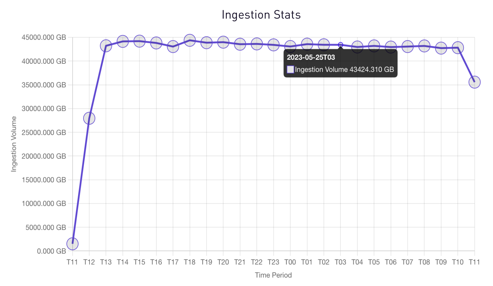
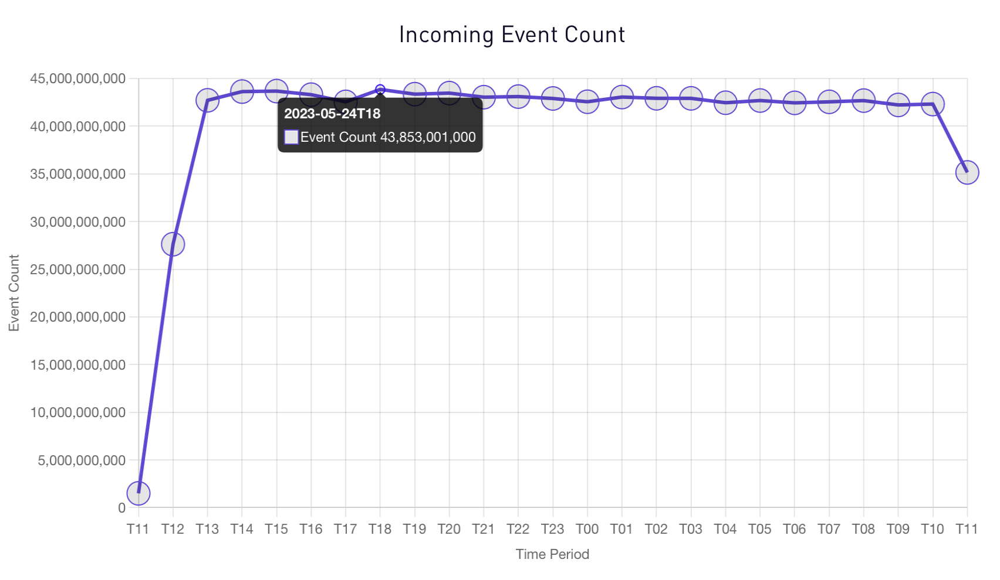
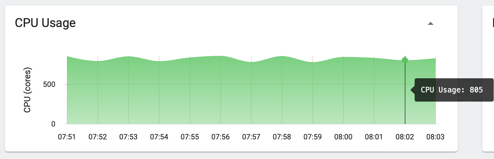
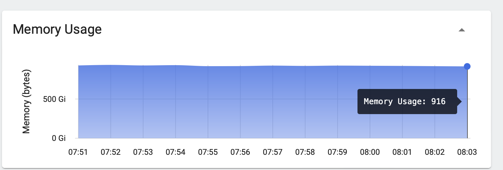
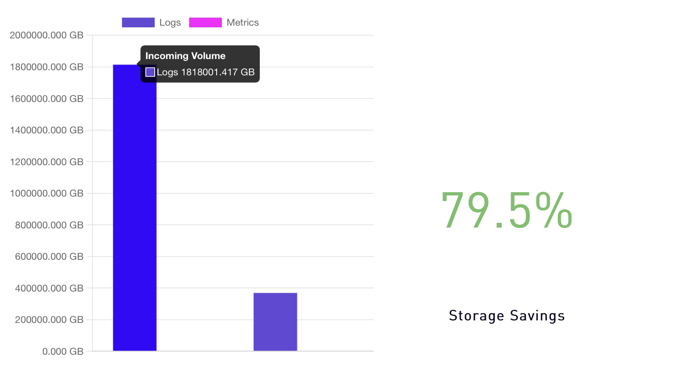
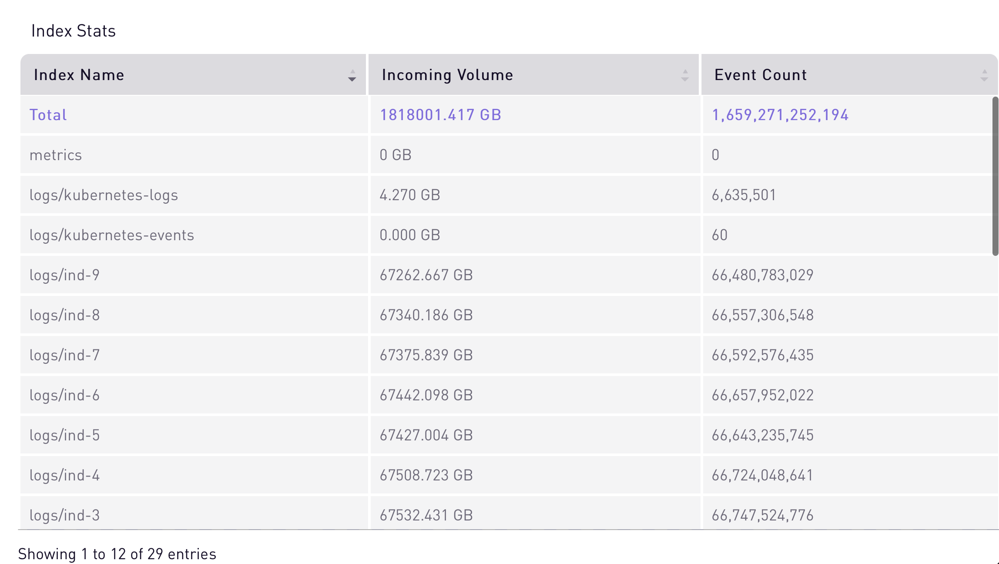

We utilized a public Git repository to generate a dynamic dataset with high cardinality. Here are some key details about this dataset:
| Num. of log lines | 1 Trillion |
| Total Bytes | 1 Petabyte |
| Log line size | 1000 bytes |
| Num. of Columns | 34 |
| Num. of Columns with 1 Trillion cardinality | 1 |
| Num. of Columns with 100 Billion cardinality | 6 |
| Num. of Columns with free text | 6 |
| Num. of numeric columns | 5 |
Now we are ready with our dataset, let's move to our next step which is Deployment Setup. SigLens forged ahead into the deployment setup, establishing its presence within an AWS EKS Cluster. Equipped with resilience and strength, we got some resources, such as:
EC2 Node Type: (32 vCPU, 64
GB RAM, EBS)
SigLens got a bunch of pods, each with 10vCPUs ready to ingest data into it's domain. In fact, there are 100 of these pods, all set to help SigLens gather up data.
Here, we have the details of Pod:
| POD Type: | 10 vCPU, 20 GB RAM, 40 GB EBS , S3 |
| Total Num of pods | 100 |
| Num vCPU | 1000 |
| RAM | 2 TB |
| EBS | 4 TB |
| S3 | 200 TB |
Let's move to querying operations, where we deploy a single pod with 10 vCPUs , ensuring fast and decisive responses.
| POD Type: | 10 vCPU, 25 GB RAM, 50 GB EBS |
| Total Num of pods | 1 |
| Num vCPU | 10 |
| RAM | 25 GB |
| EBS | 50 GB |
Next, we have to look for Client Resources. SigLens had a bunch of pods, each with 7 vCPUs, all set to carry out commands and talk to users.
| POD Type: | 7 vCPU, 2 GB RAM |
| Total Num of pods | 75 |
| Num vCPU | 525 |
| RAM | 150 GB |
With everything ready to go, SigLens started its task: taking in a petabyte of data. As we can see, for more than 24 hours straight, SigLens showed off its scalability and reliability. It maintained a constant speed, with an ingestion rate of 44 TB of data every hour.
Each logline ingested during our testing was unique, resulting in a total cardinality of one trillion.
The graph below illustrates SigLens's remarkable performance, as it successfully ingested 44 billion events per hour, accumulating a total of over one trillion events within a 24-hour period.
This accomplishment further underscores the scalability and efficiency of SigLens in handling massive data.
SigLens's incredible performance is depicted in the graph below, making ingestion of 44 billion unique events per hour.
SigLens used an average of just 805 vCPUs while processing a petabyte of data, although we allocated 1000 vCPUs during resource allocation.
Similarly, we allocated 2TB of RAM for the ingest pods, but SigLens used only 916 GB for the petabyte of data.
At the end of the test our storage statistics were as follows.
SigLens takes the incoming data, converts it into columnar segments and columnar micro indices. Compression is dynamic in nature for each segment based on the shape of the data.
Let's take a look at the graph below, which demonstrates individual index count, where each index had over 67 TB of data and 66 Billion of unique events. 
We can witness exceptional performance of SigLens not only in data ingestion but also in querying operations. It maintained smooth operation of queries during and after the ingestion of the entire petabyte dataset. Maintaining query response times around 3 seconds, SigLens efficiently processed queries while combing through the massive volume of data.
batch=batch-123 for a 3-hour lookback batch=batch-123 for a 30 days lookback Enterprises dealing with large volumes of data must carefully consider the compute resources they consume. While many organizations opt for open source software initially due to its perceived cost advantage, the reality is that hidden expenses, such as compute and maintenance costs, start to accumulate over time. To shed light on this matter, we conducted a comparative analysis to demonstrate the true cost implications of installing SigLens within your network compared to popular alternatives like Elasticsearch or Splunk.
Below, we present a snapshot of our AWS bill for a single day, providing an insightful glimpse into the significant cost savings achievable with SigLens.
Our total cost for running this test was a mere $1200 for the full 24-hour period. In comparison, any other solution in the industry would have costed a minimum of $100,000.
In the end, SigLens's journey through the petabyte realm was nothing short of legendary. With its unmatched scalability, efficiency, and cost-effectiveness, SigLens paved the way for affordable observability solutions, ensuring reliability even for massive datasets.
Our open-source test data
generator allows you to compare SigLens against any other vendor. Furthermore, we offer
assistance in
setting up SigLens in your network for a personalized evaluation. Handling the
substantial volume of one Petabyte with efficient response rates, SigLens ensures
significantly reduced
operational costs.